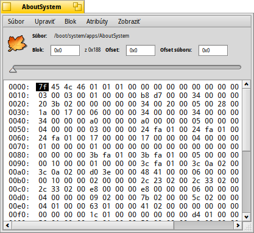
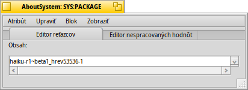

Disková sonda
Disková sonda
| Panel: | ||
| Umiestnenie: | /boot/system/apps/DiskProbe | |
| Nastavenia: | ~/config/settings/DiskProbe_data |
Disková sonda je šestnástkový editor na zobrazovanie a upravovanie údajov v súboroch alebo na zariadeniach na úrovni bajtov. Je to veľmi nízkoúrovňový nástroj a teda má potenciál pekne veci pokaziť ak si nedávate pozor!
Keď spustíte Diskovú sondu, najprv sa vás opýta na súbor alebo zariadenie, na ktorom chcete pracovať. Potom sa vám ukáže nasledovná obrazovka:

Hlavná časť zobrazuje jeden blok údajov, ktorého veľkosť môžete nastaviť v . Vľavo sú ofsety od začiatku bloku, v strede sú údaje reprezentované HEX hodnotami a vpravo sú ich ASCII symboly.
Môžete sa presúvať medzi blokmi pomocou posuvníka hore alebo s ALT ← a ALT → a prepínať medzi HEX a ASCII stĺpcami pomocou klávesu TAB.
nezobrazí výber s inou endianitou (a v HEXe alebo decimálne, nastavené cez ), ale aj interpretuje výber ako ofsetu bloku, na ktorý môžete skočiť. Bude to sivé, ak je pozícia mimo súboru/zariadenia.
Toto je praktická vlastnosť, najmä keď sa pozeráte na súborové systémy, keďže tie často obsahujú ukazovatele na ďalšie bloky.
Ak súbor, ktorý sondujete má nastavené atribúty, menu môžete použiť na otvorenie ktoréhokoľvek z nich v novom okne Diskovej sondy. Tu je atribút SYS:PACKAGE aplikácie AboutSystem:

V závislosti na atribúte, dostanete rozličnú záložku editora, popri vždy prítomnej Editor nespracovaných údajov. Napríklad, existujú editory pre reťazce a typy MIME alebo zobrazovač ikon pre atribút vectoricon.